Ryan Fernando
Chief Nutritionist

Shiny Esther
Nutritionist
Shila Rai
Nutritionist
Ashlin
Nutritionist
Shabnam Shama
Nutritionist
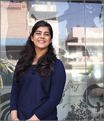
Binny Dawra
Nutritionist
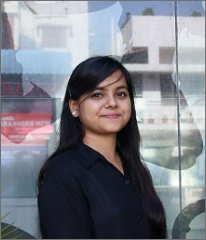
Vishnu Priya
Nutritionist
Kalyani Mankar
Nutritionist

Suhasini Vishwanathan
Head of Department

Shreya Adhav
Nutritionist
Dhanashree Rabha
Nutritionist
Sahiba Juneja
Nutritionist
Shonthar M Solo
Nutritionist
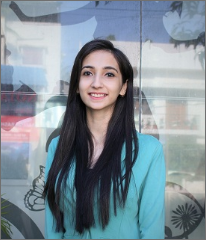
Charvi Bajaj
Nutritionist
Diksha Banthia
Nutritionist
Sneha shukla
Nutritionist

Achsah Rathan K.
Head of Quality Control

Namrata Gulati
Nutritionist
Elakkana RP
Nutritionist
Tenzin Kelsang
Nutritionist
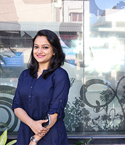
Rituparna Dutta
Nutritionist
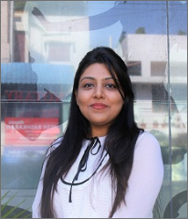
Anmol Kumar
Nutritionist
Nihath Tazeen K
Nutritionist
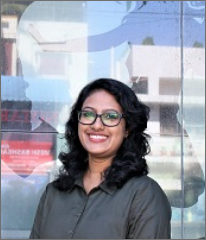
Dheeraja Devi V
Nutritionist

Ruha Karambelkar
Head of Training Department

Rhoda Bincy
Nutritionist
Pallabi Sinha
Nutritionist
Vaishali Ratnam
Nutritionist
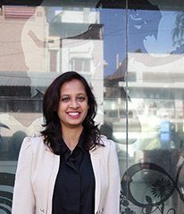
Ekkta Kundu
Nutritionist
Nikita Goel
Nutritionist
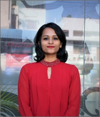
Lisa Johnson
Nutritionist
Manisha ghodke
Nutritionist

Lygia Correia
Nutritionist
Susan Bijoy Jacob
Nutritionist
Debalina Ghosh
Nutritionist
Taffylene Dkhar
Nutritionist

Jeyashree B
Nutritionist
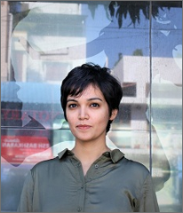
Jeanne Ribeiro
Nutritionist
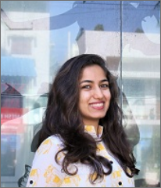
Diksha Saluja
Nutritionist
Smeetal Pereira
Nutritionist
Vartika Singhal
Nutritionist
Abigail Ajgarni
Nutritionist
Lakshmi Darshini
Nutritionist
Antara Das Gupta
Nutritionist
Garima Pallavi
Nutritionist
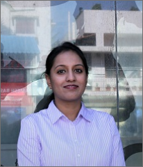